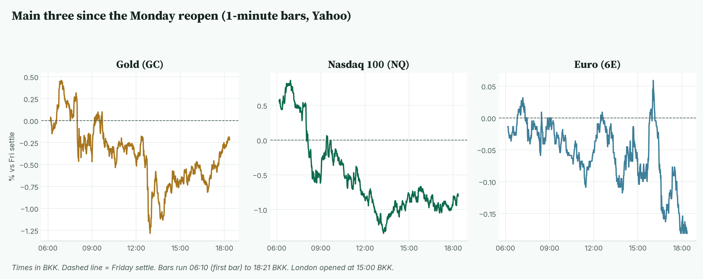
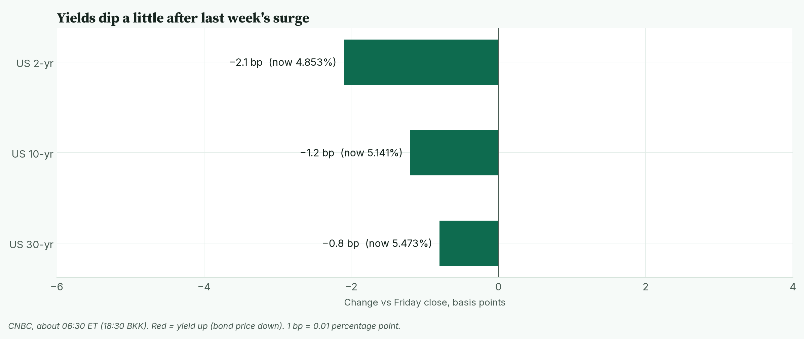
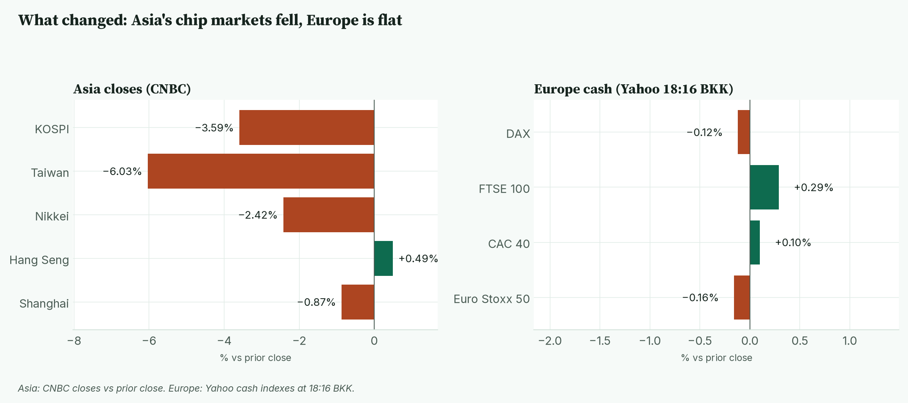
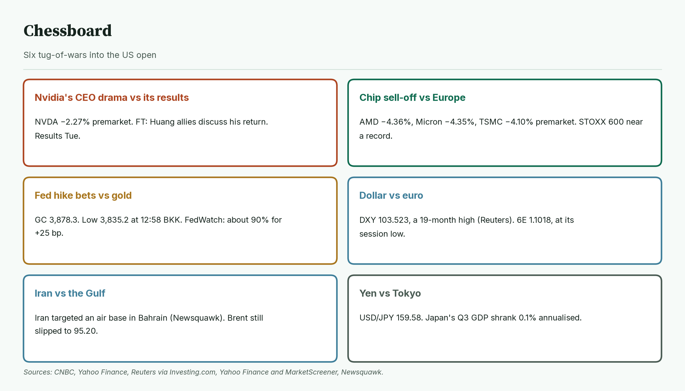
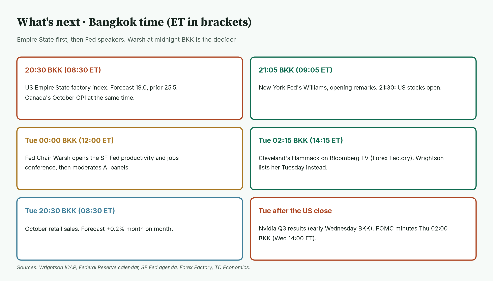
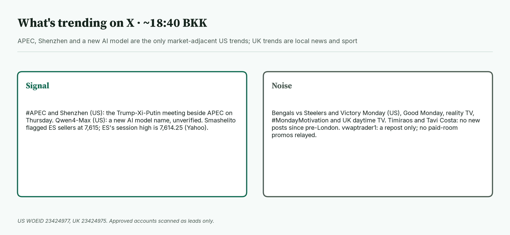

April · Market Intel, pre-NY · Mon Nov 16, 2026 · ~18:45 BKK / ~06:45 New York
Headline: Nasdaq futures are 27,811.50 (−0.80%) after bouncing off a 27,658.00 low, as chip stocks keep sliding premarket. Gold futures recovered to 3,878.3 (−0.21%) after a dip to 3,835.2. Euro futures sit at their session low, 1.1018 (−0.17%), with the dollar at a 19-month high. Fed Chair Warsh at 00:00 BKK Tuesday decides the session.
So what: since London, all three broke their pre-London lows. Gold and Nasdaq bounced back; the euro did not. The dollar is still the quiet winner.
 Caption: Futures at 18:21 BKK versus Friday's settle. Nasdaq still leads the losses, gold has cut its drop, and the VIX is creeping up.
Caption: Futures at 18:21 BKK versus Friday's settle. Nasdaq still leads the losses, gold has cut its drop, and the VIX is creeping up.
1) Main instruments The three main contracts since the Monday reopen, as a % move from Friday's settle. Gold and Nasdaq bottomed around 13:00 BKK and recovered. The euro slid after 16:00 BKK. |
 Caption: The three main contracts since the Monday reopen, as a % move from Friday's settle. Gold and Nasdaq bottomed around 13:00 BKK and recovered. The euro slid after 16:00 BKK.
(Quotes are Yahoo Finance futures at 18:21 BKK (06:21 New York), matching CNBC. Session highs and lows use Yahoo 1-minute bars from the 06:00 BKK CME reopen (18:00 New York Sunday). Yahoo's first bar today is 06:10 BKK, so ranges run since 06:10 BKK.)
Caption: The three main contracts since the Monday reopen, as a % move from Friday's settle. Gold and Nasdaq bottomed around 13:00 BKK and recovered. The euro slid after 16:00 BKK.
(Quotes are Yahoo Finance futures at 18:21 BKK (06:21 New York), matching CNBC. Session highs and lows use Yahoo 1-minute bars from the 06:00 BKK CME reopen (18:00 New York Sunday). Yahoo's first bar today is 06:10 BKK, so ranges run since 06:10 BKK.)
- Gold futures (GC, Dec): 3,878.3, −0.21%, at 18:21 BKK. Driver: a firm dollar and about a 90% chance of a December Fed hike (CME FedWatch via Reuters). Friday's settle was 3,886.3. Today's range is 3,835.2 (12:58 BKK) to 3,904.3 (06:55 BKK). It broke the pre-London low of 3,862.5, then recovered.
- Nasdaq 100 futures (NQ, Dec): 27,811.50, −0.80%, at 18:21 BKK. Driver: chip stocks are falling again ahead of Nvidia's results on Tuesday. Friday's settle was 28,034.75. Today's range is 27,658.00 (13:16 BKK) to 28,279.25 (06:55 BKK).
- Euro futures (6E, Dec): 1.1018, −0.17%, at 18:21 BKK. Driver: the dollar index rose for a fifth day, to its highest in 19 months (Reuters). Friday's settle was 1.1037. Today's range is 1.10155 (18:17 BKK) to 1.10435 (16:03 BKK). It is sitting on the low.
- Takeaway: Nasdaq and gold found buyers at their lows. The euro has not.
Context. The dollar index (DXY, the dollar against six major currencies) is 103.523, +0.11% (CNBC, 18:31 BKK). The 10-year US yield (what the US government pays to borrow for 10 years) is 5.141%, down 1.2 basis points (CNBC, 18:31 BKK; a basis point is 0.01 percentage point). The VIX (the "fear gauge" built from S&P 500 option prices) is 19.97, +3.47% (CNBC, 18:31 BKK, an indicative pre-open print). US oil (CL, December) is 88.16, −0.45% (Yahoo, 18:21 BKK). S&P 500 futures (ES) are 7,560.00, −0.30% (Yahoo, 18:21 BKK). Bitcoin is $64,625, −0.53% versus CNBC's previous close (CNBC/Coin Metrics, 18:31 BKK).
2) Premarket earnings and movers
- Chips, not earnings, drive the premarket. Prices are Yahoo premarket, 18:29 to 18:31 BKK.
- Nvidia −2.27% at 159.16. The FT reports Jensen Huang and his allies are discussing a campaign to reinstate him as CEO (via Yahoo Finance). Results come Tuesday after the US close.
- Treasury Secretary Bessent said Nvidia needs a "shake-up" with an outside CEO (Newsquawk).
- The rest of the chip chain is worse. AMD −4.36%, Micron −4.35%, TSMC −4.10%, Broadcom −2.98%, ASML −2.64%.
- Takeaway: the selling is in the suppliers more than in Nvidia itself.
3) Rates, FX and oil Yields slipped a little across the curve. That is a pause after last week's 29.5 bp jump in the 10-year, not a turn. |
 Caption: Yields slipped a little across the curve. That is a pause after last week's 29.5 bp jump in the 10-year, not a turn.
Caption: Yields slipped a little across the curve. That is a pause after last week's 29.5 bp jump in the 10-year, not a turn.
- CNBC, about 18:30 BKK: 2-year 4.853% (−2.1 bp), 10-year 5.141% (−1.2 bp), 30-year 5.473% (−0.8 bp).
- Fed odds: 89.7% for a +25 bp hike on Dec 9, 10.3% for +50 bp, down from 11.5% on Friday (CME FedWatch via Reuters). Traders price four hikes by September 2027, by a slim margin.
- Dollar. DXY is at its highest since April 2025 (Reuters). EUR/USD is 1.1006 (CNBC, 18:31 BKK).
- Yen. USD/JPY is 159.58 (CNBC, 18:31 BKK). Japan's economy shrank at a 0.1% annualised pace in Q3, against forecasts of +0.3% growth (Reuters).
- Oil. WTI 88.16 and Brent (January) 95.20, −0.67% (CNBC, 18:21 BKK). CNBC shows Brent between 94.32 and 96.77 today. Crude stayed soft even though Iran targeted an air base in Bahrain, its first direct strike on the Gulf state in weeks (Newsquawk).
- Takeaway: rates are resting, the dollar is not.
4) Why it matters Asia's chip-heavy markets closed sharply lower. Europe is near flat, acting as the place to hide from AI swings. |
 Caption: Asia's chip-heavy markets closed sharply lower. Europe is near flat, acting as the place to hide from AI swings.
Caption: Asia's chip-heavy markets closed sharply lower. Europe is near flat, acting as the place to hide from AI swings.
- Asia closed hard: Taiwan −6.03%, KOSPI −3.59%, Nikkei −2.42%. Hong Kong was the exception, +0.49% (CNBC).
- Europe is the "anti-AI" trade. The STOXX 600 was near a record, +0.1% at 664.97 (Reuters, 09:36 GMT). Morgan Stanley upgraded European stocks to overweight (Reuters).
- European chip names still slipped. Aixtron −1.4%, Technoprobe −3.7% (Reuters).
- Mentor: when one sector's story cracks, money rotates rather than leaves. Today it moved from chips to defence, healthcare and consumer stocks in Europe.
- Takeaway: New York opens into an AI sell-off that Europe has sidestepped.
5) Chessboard Six tug-of-wars into the US open. Warsh and Nvidia move the main three fastest. |
 Caption: Six tug-of-wars into the US open. Warsh and Nvidia move the main three fastest.
Caption: Six tug-of-wars into the US open. Warsh and Nvidia move the main three fastest.
- Nvidia's CEO drama vs its results. NVDA −2.27% premarket. Results Tuesday.
- Chip sell-off vs Europe. AMD, Micron and TSMC down over 4%. The STOXX 600 is near a record.
- Fed hike bets vs gold. GC 3,878.3, back from a 3,835.2 low.
- Dollar vs euro. DXY 103.523. 6E 1.1018, at its low.
- Iran vs the Gulf. Brent 95.20 despite the Bahrain strike.
- Yen vs Tokyo. USD/JPY 159.58, just under 160, after a weak GDP print.
- Takeaway: the board leans toward a stronger dollar and weaker chips.
6) US data calendar (BKK times, ET in brackets) A light data day. The Empire State survey comes first, and Warsh at midnight BKK is the big one. |
 Caption: A light data day. The Empire State survey comes first, and Warsh at midnight BKK is the big one.
Caption: A light data day. The Empire State survey comes first, and Warsh at midnight BKK is the big one.
- 20:30 (8:30 AM ET): Empire State factory index. Forecast 19.0, prior 25.5 (TD Economics). Canada's October CPI comes at the same time.
- 21:05 (9:05 AM ET): New York Fed's Williams, opening remarks (Wrightson ICAP). 21:30: US stocks open.
- Tue 00:00 (12:00 PM ET): Fed Chair Warsh opens the SF Fed productivity and jobs conference, then moderates panels on AI (Federal Reserve, SF Fed agenda). This is the session decider. He usually avoids rate guidance (Investing.com).
- Tue 02:15 (2:15 PM ET): Cleveland's Hammack on Bloomberg TV (Forex Factory). Wrightson lists her on Tuesday instead, so treat the time as unconfirmed.
- Tue 20:30 (8:30 AM ET): October retail sales. Forecast +0.2% month on month (TD Economics, CIBC).
- Nvidia reports Tuesday after the US close (early Wednesday BKK). FOMC minutes Thu 02:00 BKK (2:00 PM ET Wed) (Wrightson ICAP).
- Takeaway: with little data, Fed voices set the tone today.
7) Scenarios and levels
- Hawkish Warsh (hints at more hikes). Yields and the dollar rise. Watch GC 3,835.2, NQ 27,658.00 and 6E 1.10155 for breaks lower.
- No guidance (the base case, per ING and Newsquawk). Ranges likely hold. GC 3,835.2 to 3,904.3, NQ 27,658.00 to 28,279.25, 6E 1.10155 to 1.10435.
- Upbeat on AI productivity. A story of growth without inflation could lift Nasdaq toward 28,279.25 and give the euro room toward 1.10435.
- These are possible paths, not forecasts.
8) Undercovered
- Japan's economy shrank in Q3. The annualised −0.1% missed forecasts of +0.3%. Newsquawk notes bad weather and the Kyushu earthquake hit output (Reuters, Newsquawk).
- Novo Nordisk +3.2% after its CagriSema drug showed 25.4% weight loss among early responders (Reuters).
- Ukraine and the Donbas. Zelensky said US envoys asked whether Ukraine would give up the Donbas in exchange for NATO membership (Newsquawk).
- Copper and miners are sliding on weak Chinese data. Europe's basic resources sector fell 1.2% (Reuters).
- Takeaway: growth is wobbling outside the US while inflation keeps the Fed hawkish.
9) What's trending on X (~18:40 BKK) APEC and Shenzhen are the only market-adjacent US trends. The rest is football and Monday chatter. |
 Caption: APEC and Shenzhen are the only market-adjacent US trends. The rest is football and Monday chatter.
Caption: APEC and Shenzhen are the only market-adjacent US trends. The rest is football and Monday chatter.
- US: #APEC, Shenzhen, Qwen4-Max, Bengals.
- UK: #thismorning, Rwanda, Greater Manchester, Cucurella.
- Signal: APEC and Shenzhen point to the Trump, Xi and Putin meeting there on Thursday (CNBC, AP). Qwen4-Max looks like a new AI model name. I have not verified a launch.
- Approved accounts: Smashelito flagged ES sellers at 7,615 early in Asia. ES's session high is 7,614.25 (Yahoo). Timiraos and Tavi Costa had no new posts since the pre-London scan. vwaptrader1 posted only a repost. No paid-room promos relayed.
- Noise: Bengals vs Steelers, Good Monday, reality TV and UK daytime TV.
Bottom line: chips are still bleeding, and the dollar is still climbing. For Jim: Nasdaq at 27,811.50 sits in the lower half of 27,658.00 to 28,279.25. Gold at 3,878.3 sits mid-range, 3,835.2 to 3,904.3. The euro at 1.1018 sits on its 1.10155 low. Interpretive note: Warsh at 00:00 BKK is the hinge for all three. 🔮 Interpretive, not data: the 16th reduces to 7, the number of the analyst and the hidden thing. A fitting day for a Fed chair asked to read a technology nobody fully understands yet. Symbol, not signal.
Confidence: Futures levels: high (Yahoo, matching CNBC). Session ranges: Yahoo 1-minute bars from the first bar at 06:10 BKK. Brent's range is CNBC's, because Yahoo showed a lone 92.20 print at 16:28 BKK that CNBC does not confirm. Yields, DXY, VIX, yen, Bitcoin, Asia: CNBC, time-stamped. Premarket prices: Yahoo, 18:29 to 18:31 BKK. Fed odds, dollar, gold, Japan GDP and Europe: Reuters via Investing.com, Yahoo Finance and MarketScreener. Nvidia CEO report: FT via Yahoo Finance. Bessent, Iran, Ukraine: Newsquawk. Calendar: Wrightson ICAP, Federal Reserve, SF Fed, Forex Factory, TD Economics. X posts: leads only. Removed: Yahoo's Brent low (unconfirmed outlier). Hammack's time is unconfirmed.
Charts: /workspace/april-charts/2026-11-16/pre-ny-{scoreboard,main3,rates,asia,chess,leading,xsplit}.png |